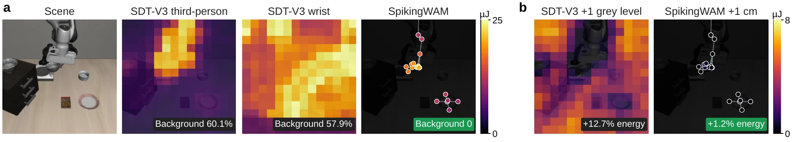
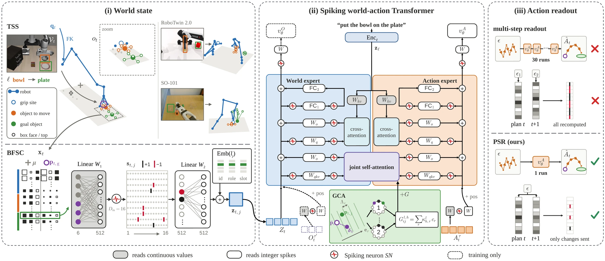

1University of Electronic Science and Technology of China2LuxiTech3Northwestern Polytechnical University
SpikingWAM is the first spiking world-action model. It reads a sparse task skeleton instead of video, runs the network once per plan, and needs 1.467 mJ per plan on LIBERO, perception included.
A closed-loop LIBERO-10 episode of the final model, re-rendered from a moving camera. The scene first appears as a video world state, then as the task skeleton the policy reads: arm nodes from the joint angles, object nodes estimated from camera images by a small spiking network. During the run, rings mark the nodes that moved since the last plan, and the red path is the executed action chunk. The video ends with more closed-loop episodes on LIBERO and RoboTwin 2.0.
World-action models (WAMs) predict how the world responds to actions, but they are large and run the network many times per plan, so they are hard to deploy on robots.
Spiking neural networks (SNNs) compute with sparse binary spikes and use additions instead of multiplications, which saves power. Existing WAMs, however, use dense videos as the world state, so a spiking version would spend most of its computation on the background. We therefore introduce SpikingWAM, the first spiking WAM, which uses a sparse task skeleton as the world state.
Inspired by biological motor control, which attends only to the key positions of a task, the Task Skeleton State (TSS) keeps the keypoints of the arm and the task objects, and a small spiking front end estimates the object keypoints from images. Body Frame Spike Coding (BFSC) and Grid Coincidence Attention (GCA) keep millimetre precision, and the Persistent Single Step Readout (PSR) runs the network once per plan.
On LIBERO, LIBERO-Plus and RoboTwin 2.0, SpikingWAM achieves competitive success rates with far less energy than ANN methods and surpasses all compared methods on LIBERO-Plus. Real robot experiments further confirm its effectiveness.
An SNN saves energy only when few neurons fire. With video as the world state, most events fall on pixels that have nothing to do with the task, and small image jitter keeps triggering new ones. A task skeleton keeps only the keypoints of the arm and the objects named in the instruction.

A single spiking network, trained from scratch, learns future skeletons and action chunks together. At inference it generates only the action chunk. Hover a block to see what it does.
TSS keeps the keypoints of the arm and of the objects named in the instruction: centres, face centres that rotate with the object, points on moving parts, and the two fingertips. Arm nodes come from forward kinematics; a small spiking front end estimates the object nodes from images.
A coordinate written into integer spikes is quantized. Over the whole workspace, the level spacing exceeds 10 cm. BFSC also gives each node its coordinates relative to the grip site and uses more levels in the input layer, so the spacing shrinks where precision matters: near the hand.
Actions depend on where the hand is relative to the object, but each node is quantized on its own, so a relative position can be off by a full level. Inspired by grid cells, GCA writes positions as grid spike codes: several phase rings, each with its own direction and scale.
The geometry term between two tokens simply counts the bits that are active in both codes. It is computed from the positions by phase, so it skips the quantization of the input layer, and it is added to the self-attention scores.
Flow-matching policies integrate several steps and draw several samples per plan, with fresh noise each time, so nothing carries over between plans. At the noise end, a single step from pure noise already gives the conditional mean of the action chunk.
PSR draws the noise once per episode. Between two plans only the skeleton changes, so each neuron sends only the change of its output, as in sigma-delta networks, and the receiving layer adds it up. The result is exact, and the work scales with the change.

All SpikingWAM numbers use object keypoints estimated from images by the spiking front end, and its energy is counted. Energy is estimated per plan for a 45 nm process.
Hover a point. Upper left is better. Energy per plan, log scale.
SpikingWAM reaches 98.25% on LIBERO with 1.467 mJ per plan, more than an order of magnitude below every compared method.
It is 5.85 points above Spike-driven VLA, which is also a spiking network but reads images and needs 20.9 mJ. It is also above π0.5 and Fast-WAM, with 1/44 and 1/86 of their parameters.
Energy per plan of SpikingWAM, split into the front end and the policy; SDT-V3 encoding the same two camera images for comparison.
Seven kinds of perturbation over 10,030 variants. Perturbations of camera, lighting, background and noise change the image, and SpikingWAM only has to find the task objects in it: its success on these four stays between 92.9% and 95.2%. Pick a method to compare.
80.20% over 50 bimanual tasks, above π0.5 and X-VLA with 1/33 and 1/9 of their parameters.
All compared methods use extra pretraining on robot data. The SpikingWAM policy is trained from scratch on RoboTwin 2.0 demonstrations only. Easy uses clean scenes and Hard randomizes them; bimanual scenes need more accurate skeletons, so here the front end grows to 30M parameters.
| Relative coords. | Input layer | GCA | LIBERO | LIBERO-10 | Two objects |
|---|---|---|---|---|---|
| – | – | – | 91.45 | 77.4 | 70.7 |
| – | – | ✓ | 92.00 | 77.4 | 70.3 |
| ✓ | – | – | 95.60 | 88.2 | 82.0 |
| ✓ | ✓ | – | 97.80 | 93.6 | 93.3 |
| ✓ | ✓ | ✓ | 98.25 | 95.8 | 95.0 |
| Readout | N | k | Energy (mJ) | LIBERO | LIBERO-Plus |
|---|---|---|---|---|---|
| Medoid | 10 | 3 | 7.48 | 91.20 | 82.93 |
| Sample mean | 10 | 3 | 7.48 | 96.15 | 87.02 |
| Sample mean | 10 | 36 | 85.85 | 98.10 | – |
| Single sample | 1 | 1 | 1.04 | 97.70 | – |
| PSR | 1 | 1 | 0.646 | 98.25 | 88.76 |
Policy energy only. Future prediction adds 1.55 points on LIBERO-Plus, mainly under language and robot initial state perturbations.
Unedited episodes of the final models at real-time speed. On LIBERO the overlay is the skeleton at each control step, with object nodes from the spiking front end; objects the instruction does not name get no nodes. RoboTwin 2.0 clips show the head camera.
SpikingWAM, X-VLA and π0.5 are trained on the same demonstrations and run 10 trials each. Object keypoints are estimated from the external and wrist cameras by spiking networks. Below: all seven successful trials of SpikingWAM, at 1× speed.
Trial 1 of 7.
@article{liu2026spikingwam,
title = {Spiking World-Action Models for Robotic Manipulation},
author = {Liu, Mingquan and Zhou, Peng and Yao, Shanming and
Wang, Shuai and Wu, Simo and Zhang, Malu},
journal = {arXiv preprint},
year = {2026}
}